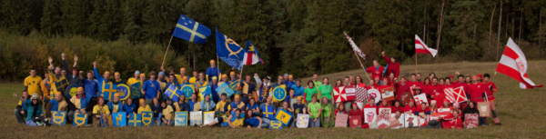

4. kvìtna 1645 se švédské vojsko pod velením generála Torstenssona rozložilo u Brna. Podle všech zpráv bylo zøejmé, že posádka mìsta je malá a mìsto má slabé zásoby potravin i støeliva. Torstensson se proto nejprve rozhodl vyzvat velitele posádky, aby se dobrovolnì vzdal. Brzy však zjistil, že veškeré vyjednávání je marné. Švédi tedy osadili všechny kláštery, kostely a budovy kolem Brna a zahájili dobývání.
Známá a slavná je historie dobývání mìsta Brna švédskou armádou. Na její poèest se již tøicetjednakrát konala recesní víkendová akce, na které se pravidelnì støetávají dvì mocná vojska - Moravané v èele s plukovníkem Raduitem de Souchem a švédská armáda generála Lenarta Torstensona. Tøicetiletá válka však už skonèila - co se bude dít v další etapì dvaatøicátém roèníku Moravských Hvozdù?
Dvì armády, dva dny, které rozhodnou... Kdo vyhraje tentokrát?
Více fotek na http://moravskehvozdy.cz/
Akce je urèena pro osoby starší 18 let.
Sraz všech úèastníkù probìhne v pátek 9.10.2015 mezi 18:30 a 20:00 na základní škole v Lipovci (okres Blansko). Hned po nahlášení se na registraci budou mít bojovníci èas na pøípravu bojového vybavení, tj. volnì letících koulí a koulí na gumièce podle pøedepsaného vzoru. Veèer zakonèí slavnostní verbování a nástup obou armád. V sobotu a v nedìli pak probìhne množství bitev a klání, ve kterých budou moci obì chrabré armády prokázat své bojové umìní. Pøedpokládaný konec akce je v nedìli 11.10. mezi 14. až 15. hodinou.
Letošní Moravské hvozdy budou mít základnu na ZŠ v Lipovci (Jihomoravský kraj, okres Blansko).
Autobusem è. 201 (smìr Blansko) ze Staré osady do Jedovnic (zastávka Jedovnice, námìstí) a dále autobusem è. 231 (smìr Studnice) do Lipovce (zastávka Lipovec, kravín). Zastávka v Lipovci je hned u školy.
Nejlépe nejprve èímkoliv do Brna, v Brnì èímkoliv na Starou osadu (z Hlavního nádraží nejlépe tramvají è. 2 smìr Stará osada) a ze Staré osady pak podle pøedchozího popisu.
Z Brna i z Prahy dojeïte do Blanska nebo do Jedovnice a dál se podívejte na mapku okolí Lipovce. Parkovat lze v Lipovci zde (parkovištì jsou skryta pod písmenky P, èerveným kroužkem je oznaèena škola).
Na akci bude zajištìna sobotní snídanì, teplý polní obìd a teplá veèeøe, nedìlní snídanì a obèerstvení po bitvì. Specifické stravovací omezení hlašte v rámci registrace. Bìhem spoleèných jídel bude k dispozici várnice s èajem (ráno i k naèepování do pet lahví s sebou). V objektu bude dále možné si zakoupit pivo a grenu, pøípadnì nìjaké sladkosti.